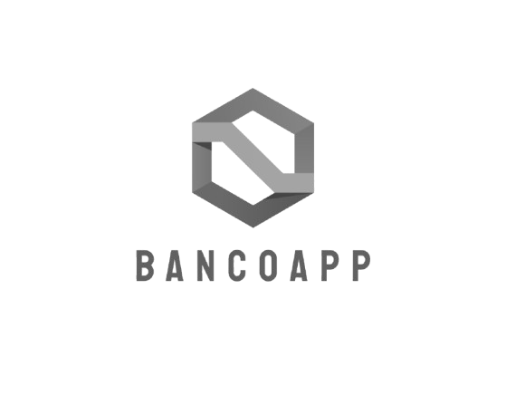

BancoApp - Aplicación de Análisis Financiero
1. Introducción
BancoApp es una aplicación web enfocada en la gestión de datos bancarios. Su objetivo es proporcionar una herramienta profesional que permita la recolección, tratamiento, análisis y visualización de datos financieros. La aplicación gestiona información de clientes, transacciones, préstamos, pagos y fraudes, facilitando la toma de decisiones basada en datos.
2. Objetivos del Proyecto
- Desarrollar una aplicación web robusta y escalable para el análisis de datos bancarios.
- Facilitar la carga y gestión de información desde archivos CSV y API externas.
- Automatizar procesos de limpieza y transformación de datos mediante Python.
- Ofrecer dashboards interactivos con visualizaciones clave.
- Garantizar la seguridad y la integridad de los datos mediante una base de datos MySQL.
3. Tecnologías Utilizadas
- Backend: Flask (Python)
- Frontend: HTML, CSS, Bootstrap
- Base de Datos: MySQL (local para desarrollo y IONOS para producción)
- Visualización: Dash para Python
- Herramientas: Visual Studio Code, MySQL Workbench, Git
4. Estructura del Proyecto
BancoApp/
│-- app/
│ ├── __init__.py
│ ├── models.py
│ ├── processing.py
│ ├── routes.py
│-- templates/
│ ├── index.html
│ ├── upload.html
│ ├── clientes.html
│ ├── analisis.html
│-- static/
│-- data/
│-- main.py
│-- requirements.txt
5. Funcionalidades Implementadas
- Carga de Datos: Subida de archivos CSV con validación de estructura.
- Base de Datos: Gestión de clientes, préstamos, transacciones y fraudes.
- Visualizaciones: Dashboards interactivos para analizar tendencias y detectar fraudes.
- Predicción de Riesgo: Implementación de un modelo de predicción basado en datos.
- Seguridad: Clave secreta y restricción de acceso a áreas sensibles.
6. Plan de Implementación en Producción
- Desplegar la aplicación en IONOS.
- Migrar la base de datos local a MySQL en la nube.
- Configurar el dominio web eduardocbalma.store.
- Realizar pruebas de carga y seguridad.
7. Futuras Mejoras
- Integración de autenticación de usuarios.
- Automatización de reportes periódicos.
- Expansión de la API para acceso remoto a datos.
- Implementación de machine learning para análisis predictivo.
8. Conclusión
BancoApp es un proyecto integral que aborda la gestión de datos financieros con un enfoque en automatización, seguridad y visualización. Su arquitectura flexible permite adaptarse a diferentes necesidades del sector bancario, garantizando eficiencia y confiabilidad.
Explora la Aplicación
Puedes acceder a la aplicación en el siguiente enlace:
Ir a BancoApp →